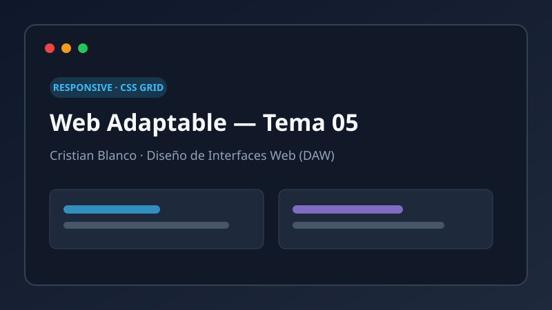

Tema 05 · Ciclo
Web Adaptable
Portal Editorial Adaptable
Sitio web adaptable enfocado en la lectura cómoda en móvil, tableta y escritorio, aplicando diseño mobile-first, rejilla flexible y optimización visual.
HTML5
CSS3
Responsive